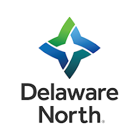

Experience
-
Aug 2023 - Present
Graduate Teaching Assistant
Guided over 50 students in mastering core Java principles, encompassing object-oriented design, design patterns, testing, concurrency, and more. Led lab sessions, provided office hours, managed assessments, and efficiently tracked student progress, fostering an engaging and supportive learning environment.
-

May 2023 - Aug 2023
Delaware North
As a Data Engineer Intern I led the development and implementation of modular Python code within an enterprise data platform, optimizing tools, introducing innovative solutions, and achieving a 70% increase in data quality and support efficiency.
-

Mar 2023 - Present
iConsult Collaborative
Collaborated with the design team to create visually appealing and user-friendly web pages for a law firm website on the Wix platform. Contributed to feature development, addressed frontend issues, and ensured a seamless, error-free user experience by implementing best practices in mobile-friendly design and user interactions using Wix, HTML, CSS, and Node.js.
-
Aug 2020 - Aug 2022
Larsen and Toubro Infotech
Pioneered the analysis of extensive datasets, playing a key role in crafting scalable Big Data solutions and optimizing ETL ecosystems. Innovatively revamped a Data Ingestion automation Framework, orchestrating PySpark jobs for diverse data origins, and conducted thorough data analyses, elevating operational efficiency and reliability to new heights.